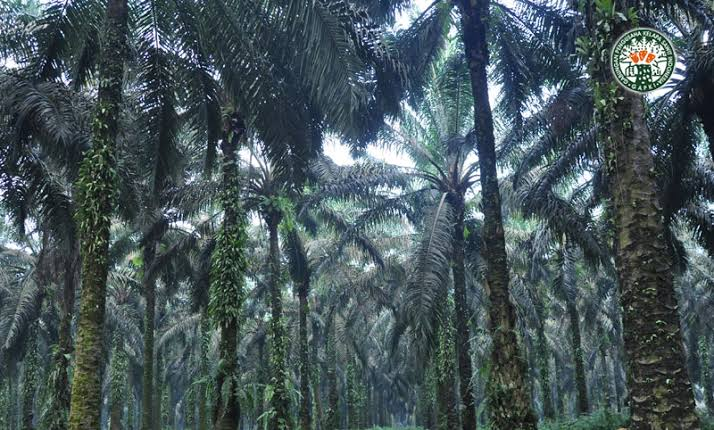

.png)

Saat ini, penerapan SDG 12 (Konsumsi dan Produksi yang Bertanggung Jawab) masih menghadapi berbagai tantangan serius akibat pola konsumsi masyarakat dan sistem produksi industri yang belum sepenuhnya berkelanjutan. Salah satu contohnya adalah fenomena fast fashion, yaitu produksi pakaian secara massal dengan harga murah dan mengikuti tren yang cepat berganti. Kebiasaan membeli pakaian secara berlebihan menyebabkan meningkatnya limbah tekstil. Selain itu, penggunaan bahan sintetis seperti poliester dan nilon dapat melepaskan serat mikroplastik ketika dicuci, yang kemudian mengalir ke sungai dan laut serta mencemari ekosistem perairan.
Permasalahan lainnya juga terlihat dalam industri kelapa sawit. Meskipun kelapa sawit merupakan salah satu komoditas penting bagi perekonomian Indonesia, proses produksinya dapat menimbulkan dampak lingkungan apabila tidak dikelola secara berkelanjutan. Pembukaan lahan perkebunan yang tidak bertanggung jawab dapat menyebabkan deforestasi, hilangnya habitat satwa, kerusakan ekosistem, serta peningkatan emisi gas rumah kaca. Kedua permasalahan tersebut menunjukkan bahwa kegiatan produksi dan konsumsi yang tidak terkendali dapat memberikan dampak jangka panjang bagi lingkungan. Oleh karena itu, diperlukan perubahan pola konsumsi masyarakat, penerapan praktik produksi yang lebih ramah lingkungan, serta kerja sama antara pemerintah, produsen, konsumen, dan berbagai negara untuk mewujudkan pembangunan berkelanjutan.